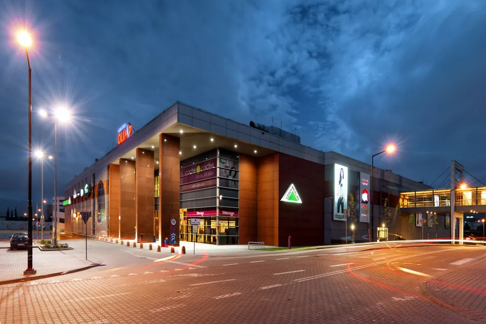
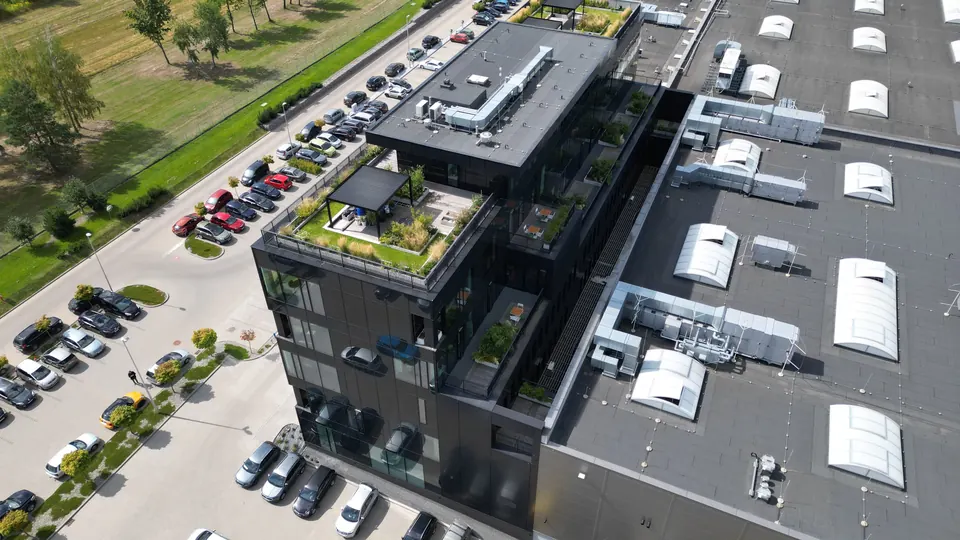
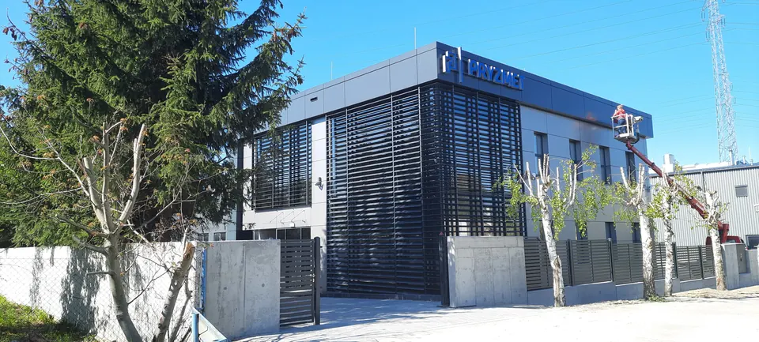
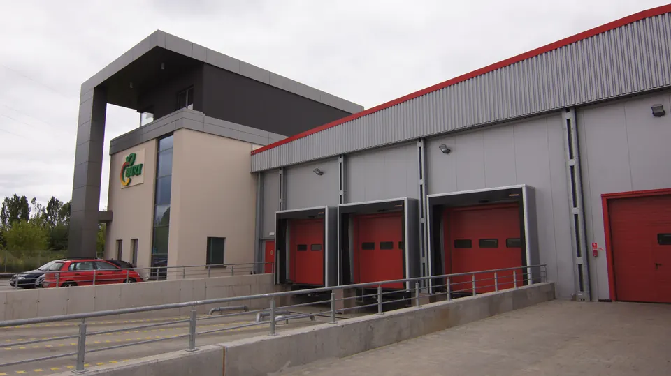
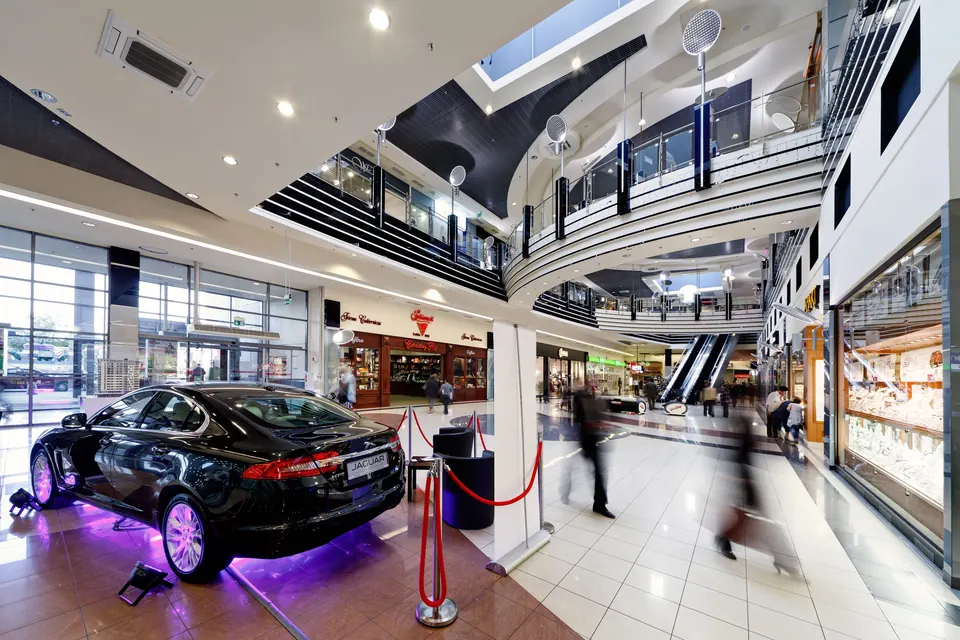

Galeria · 601
Galeria Olimp
Lublin · 1999-2013Galeria handlowo-usługowa rozbudowywana w pięciu etapach, od pierwszego budynku po część z Multikinem.
Pracownia architektoniczna · Lublin · od 1997
Rodzinna pracownia z Lublina. Od 1997 roku projektujemy galerie handlowe, zakłady produkcyjne, biurowce i budynki mieszkalne, od pierwszej koncepcji po projekt wykonawczy. Na tej stronie pokazujemy tylko to, co zostało zbudowane.

Galeria · 6Galeria handlowo-usługowa rozbudowywana w pięciu etapach, od pierwszego budynku po część z Multikinem.

Galeria · 7Rozbudowa drukarni, a potem nowy zakład DAKO NEXT realizowany etapami: hale, biurowiec i ogród na dachu.
Galeria handlowo-usługowa w dwóch etapach. Venus 1 otwarta w marcu 2006, Venus 2 oddana w 2012 roku.

Galeria · 2Budynek biurowy z częścią techniczną i elewacją z żaluzji fasadowych.

Galeria · 2Hala z częścią biurową i strefą rozładunku.

Galeria · 6Pasaż galerii z przeszklonym dachem.
Pracownia powstała w 1997 roku, samodzielnie działa od listopada 1998. Przy każdym projekcie współpracujemy ze stałymi zespołami konstruktorów, instalatorów, elektryków i teletechników oraz z rzeczoznawcami.
Najlepiej pracuje nam się z lokalnymi firmami, z którymi rośniemy przez lata. Poznajemy specyfikę ich działalności i projektujemy budynki dopasowane do potrzeb i ekonomii biznesu.